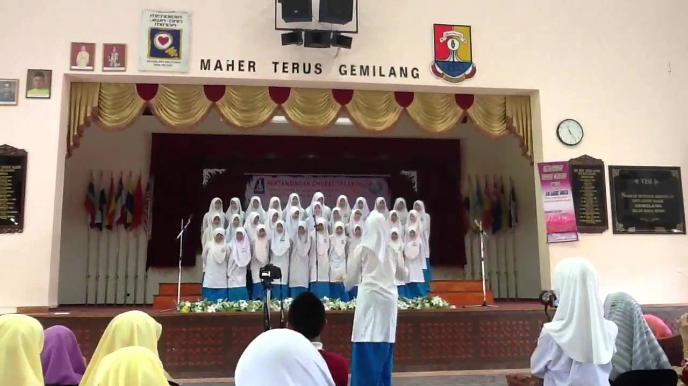
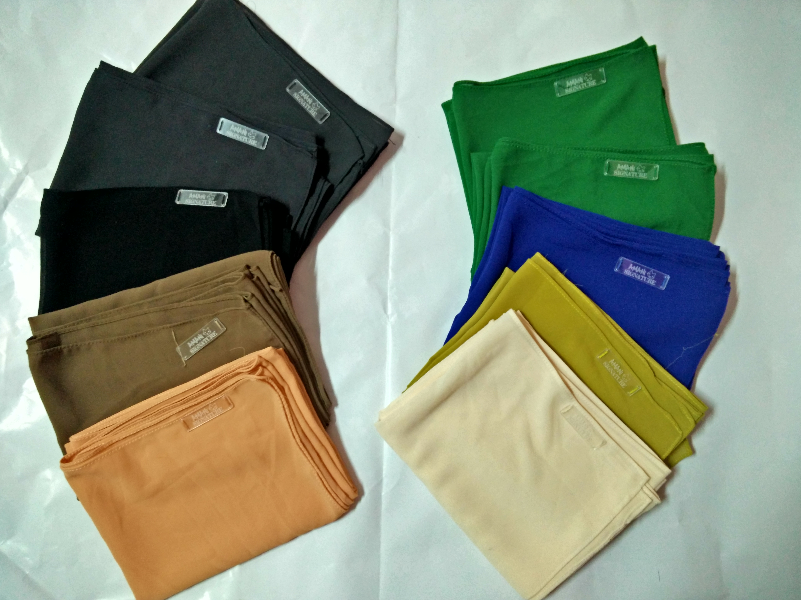

Personal Profile
All About Me
My Education
My Family
Gallery
Contact Me
THE GALLERY
These are some of the activities I have done before.

ENGLISH CHORAL SPEAKING
During my secondary school, I loved to join choral speaking to represent school and district.
KINDERGARTEN ANALYSIS
A visit to a kindergarten and analyse the teaching process of kindy kids for a day. Have to be their teacher for the day too.

ENGLISH MUSICAL TEATHER
Student of Semester 4 have to held and handle a musical teather. I was assigned to be a representative in finding sponsors and handling the on the event day.
VOLUNTEER WORK
Held and joined the volunteer work in National Zoo, KL. My activities given to me were cleaning the cage and feeding the wild animals.
FINAL YEAR PROJECT
Hold an English Day in the primary school nearby the college; SK Taman Bukit Indah. The event was held from morning until school day end and participated by Year 4 and Year 5 students.
MY PRACTICUM
I was assigned as a teacher in SK Ampang Campuran. I was teaching English and History subject for Level 2 students. I also taught Physical Education subject for Year 1.
GRADUATION DAY
Finish my diploma in 2016 and convocation was in 2017.

ONLINE SHOP
Back in 2016, I decided to set up an online business of scarf with own branding; Amani Signature.